17/10 – Início do trabalho
Realizamos apenas a leitura inicial do enunciado para compreender os objetivos e os
requisitos do projeto.
20/10 – Planejamento inicial
Definimos os tópicos principais e listamos as tarefas necessárias para o desenvolvimento.
Percebemos que nosso menu teria de ter 2 caminhos:
1 - Menu hospitalar para a enfermeira utilizar.
2 - Manipulação de vetores.
Também levantamos dúvidas sobre a estrutura do trabalho e sobre o funcionamento
esperado dos algoritmos.
21/10 – Criação do repositório
Criamos um repositório no GitHub, permitindo que cada uma pudesse trabalhar em sua
própria máquina. Nesse dia, criamos também os arquivos principais do projeto — menu.c,
sorts.c, heap.h e heap.c — e implementamos algumas funções básicas que já sabíamos e
criamos a struct paciente.
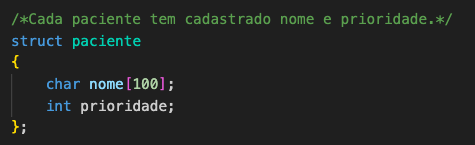
Ideias para cada arquivo:
Heap.c e Heap.h: Como o Heap é um TAD, vimos a necessidade de criar um arquivo
header com a struct paciente declarada e todas as funções essenciais para o trabalho que
abordam o TAD heap. Assim, no heap.c implementamos cada função.
Esses arquivos foram criados com o intuito de facilitar na manipulação de vetor com
pacientes no menu.c.
Menu.c: Nossa ideia principal para esse arquivo é criar o menu, que será visto pela
enfermeira.
No início do menu, haverá a escolha de qual dos dois caminhos seguir.
Sorts.c Ali implementamos as funções de ordenação para o vetor de 1024 inteiros
aleatórios:
Funções essas: QuickSort, HeapSort e SelectSort.
*Conforme trabalhamos no projeto, nos próximos dias, não vimos mais a utilidade desse
arquivo.
Funções já implementadas, vistas na disciplina:
Observação: a implementação dessas funções foi inicialmente pensada e adaptada para um vetor de
elementos struct paciente.
Segue rascunhos de como pensamos no projeto:
-Funcionamento da fila: Conforme chega pacientes no pronto socorro, a enfermeira os
cadastra e determina a prioridade do paciente.
Quão maior a prioridade, mais doente está o paciente.
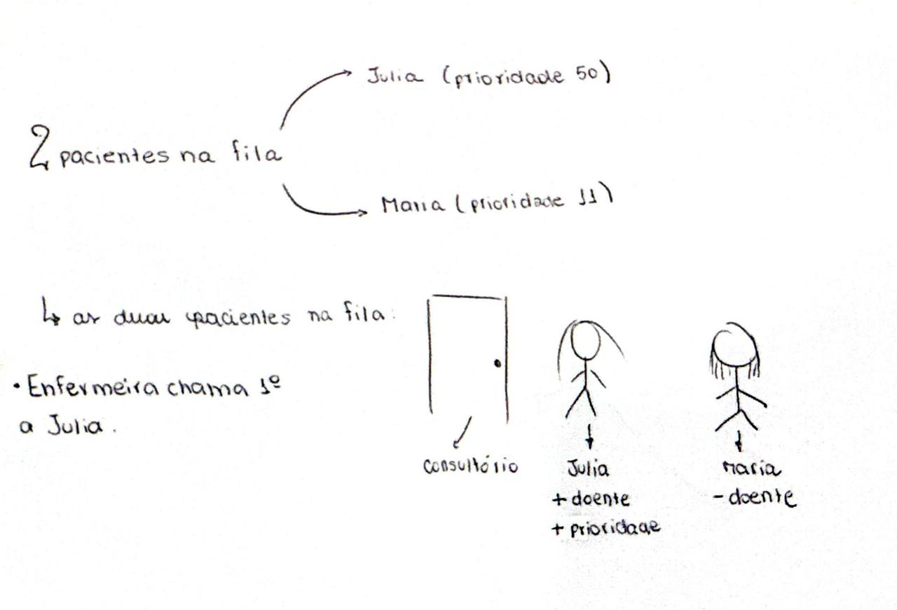
-Pensamentos inciais: Como faremos o nosso heap?
Percebemos, com o conteúdo das aulas que estruturar nosso heap em formato de max-heap,
ordenaria nosso vetor em ordem crescente e priorizaria os menos doentes.
-MinHeapfy e HeapSort:
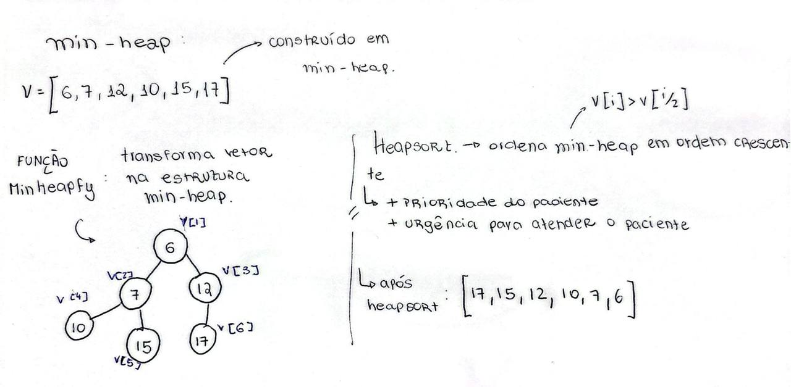
-InsereHeap
A função insere e sobe na árvore o último elemento do vetor na posição correta de
acordo com a estrutura de min-heap.
Enquanto v[i/2].prioridade > v[i].prioridade, os dois elementos são trocados (pela
função troca_pacientes) e o índice utilizado sobe na árvore (i = i/2).
Dessa forma, vamos subindo o elemento até a posição correta conforme a estrutura.
-MinHeapfy:
Constrói a estrutura de heap (min-heap) a partir de um vetor desordenado.
Função composta de um laço for que vai do índice 2 até o índice “tam” (último índice
da fila) inserindo (com a funcao InsereHeap) os elementos do heap, de maneira que o vetor
seja construindo obedecendo a estrutura desejada.
-ImprimeHeap:
Percorre todos os pacientes do vetor e imprime o nome e a prioridade:
ex: João (Prioridade 10)
-ChecaHeap:
Analisa um vetor e verifica por laço e comparações se o vetor obedece o
comportamento de um min-heap.
Retorna 0, em caso negativo e 1 em casos positivos.
-SacodeHeap
O funcionamento dessa função baseia-se na comparação de cada nó da árvore (v[i/2])
com o menor entre v[i] e v[i+1], já que em um min-heap v[i/2] deve ser menor ou igual a ambos.
Dessa forma, quando v[i/2].prioridade > v[i].prioridade, os dois elementos são trocados
(o elemento “desce” na árvore), e o índice é multiplicado por 2 (i *= 2) para continuar o
processo nos níveis inferiores.
A ideia é “sacudir” a árvore até que o elemento caia na posição correta, restaurando a propriedade de min-heap.
-HeapSort:
Primeiro aplicamos MinHeapfy para montar o min-heap.
Depois, o menor elemento (no min-heap sempre fica em v[1]) é trocado com o
último elemento do vetor. Como parametro da funcao SacodeHeap, diminuimos o tamanho do nosso vetor.
Chamamos SacodeHeap para restaurar o min-heap após a troca.
O processo se repete até o vetor ficar ordenado em ordem decrescente.
-Aleat:
Para a função aleat, responsável por gerar números aleatórios em um certo
trabalho, nos inspiramos na disciplina de Programação 1 que no primeiro trabalho tivemos
que dominá-la.
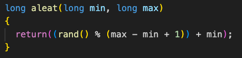
Função aleat
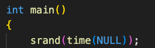
Semente randomica para gerar vetores diferentes a cada execução.
Por último, no dia, vimos a necessidade de criar uma função troca_pacientes que troca os
pacientes de posição, para otimizar o código de outras funções como InsereHeap,
SacodeHeap e HeapSort.
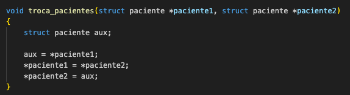
24/10 – Implementação inicial dos algoritmos de ordenação
Implementamos novas funções de ordenação (sorts) e começamos a analisar o número de
comparações realizadas em cada algoritmo. Nesse processo, surgiram dúvidas, pois os
resultados não estavam condizentes com o esperado:
Primeiro criamos variáveis globais, comparações e trocas do tipo long long para usarmos
em todas as funções de ordenação.
 Primeiro implementamos o SelectSort e depois de algumas tentativas corrigimos a soma de
comparações na função.
Implementamos o QuickSort com o pivô sendo a mediana e copiamos as funções do heap.c
para implementarmos o HeapSort.
No entanto, notamos que em um caso (primeiro caminho do menu) trabalhamos com structs
pacientes, e no outro com vetores de inteiros. Então adaptamos, novamente, as funções do
heap para se adequarem aos vetores aleatórios de 1024 elementos inteiros.
-SelectSort:
O Select Sort funciona escolhendo o menor elemento do vetor e colocando ele na
posição certa a cada passada do laço.
O algoritmo é composto de dois laços:
1. Externo: percorre da primeira até a penúltima posição, e a cada mudança de i
consideramos v[i] o menor elemento, sendo i = menor_elemento]
2. Interno: comparamos v[menor_elemento] com cada elemento do vetor, para que
quando haja um v[j] < v[menor_elemento] o valor do índice menor_elemento é trocado.
Depois que o laço interno termina,trocamos o elemento da posição i e o menor
encontrado. Assim, a cada passada o menor valor restante vai para o início, até o vetor ficar
totalmente ordenado.
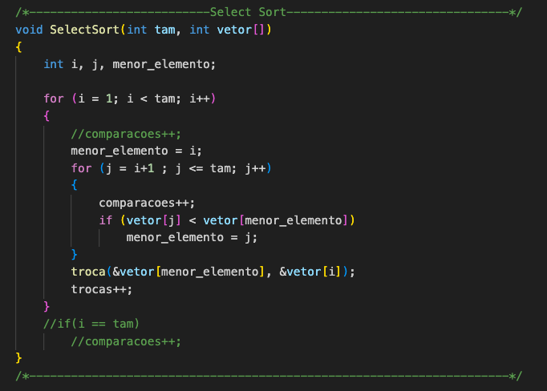
-QuickSort:
O nosso algoritmo de QuickSort usa como pivô o elemento que é a mediana entre o
primeiro, meio e último elemento.
O algoritmo é composto de 3 funções:
1. mediana: Verifica qual valor, entre os 3 passados, está no meio. Não pode ser o
maior e nem o menor. O retorno da função é o elemento do meio.
Primeiro implementamos o SelectSort e depois de algumas tentativas corrigimos a soma de
comparações na função.
Implementamos o QuickSort com o pivô sendo a mediana e copiamos as funções do heap.c
para implementarmos o HeapSort.
No entanto, notamos que em um caso (primeiro caminho do menu) trabalhamos com structs
pacientes, e no outro com vetores de inteiros. Então adaptamos, novamente, as funções do
heap para se adequarem aos vetores aleatórios de 1024 elementos inteiros.
-SelectSort:
O Select Sort funciona escolhendo o menor elemento do vetor e colocando ele na
posição certa a cada passada do laço.
O algoritmo é composto de dois laços:
1. Externo: percorre da primeira até a penúltima posição, e a cada mudança de i
consideramos v[i] o menor elemento, sendo i = menor_elemento]
2. Interno: comparamos v[menor_elemento] com cada elemento do vetor, para que
quando haja um v[j] < v[menor_elemento] o valor do índice menor_elemento é trocado.
Depois que o laço interno termina,trocamos o elemento da posição i e o menor
encontrado. Assim, a cada passada o menor valor restante vai para o início, até o vetor ficar
totalmente ordenado.
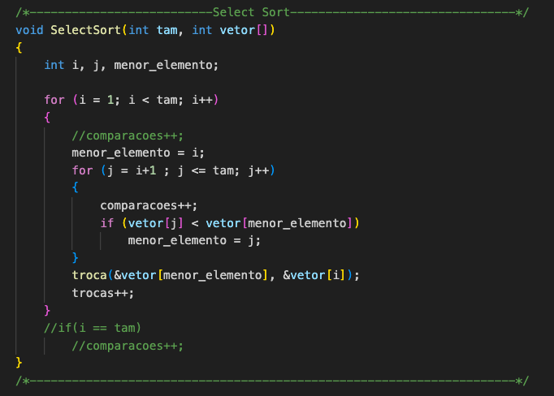
-QuickSort:
O nosso algoritmo de QuickSort usa como pivô o elemento que é a mediana entre o
primeiro, meio e último elemento.
O algoritmo é composto de 3 funções:
1. mediana: Verifica qual valor, entre os 3 passados, está no meio. Não pode ser o
maior e nem o menor. O retorno da função é o elemento do meio.
 2.partição: usamos o retorno da função mediana como pivô.
Primeiro, coloco o pivô na posição inicial (esq) do atual sub-vetor. Em seguida, criamos
dois índices: i, que começa logo à direita do pivô (esq + 1) e j, que começa no final (dir).
O i avança da esquerda para a direita enquanto encontrar valores menores ou iguais
ao pivô, e o j recua da direita para a esquerda enquanto encontrar valores maiores que o
pivô.
Quando os dois param em posições, tal que i passa j, fazemos a troca desses elementos.
Assim, organizamos o vetor de forma que, no fim, tudo que é menor ou igual ao pivô fique à
esquerda e tudo que é maior fique à direita.
Para encerrar a função, após os índices i e j se cruzarem trocamos o v[j] com o pivô,
para assim j se torne a nova posição do pivô após a partição.
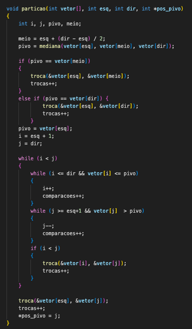
3.QuickSort: Função recursiva que chamamos os dois sub-vetores que formam as
metades (antes do pivô e depois do pivô) até que o vetor esteja ordenado.
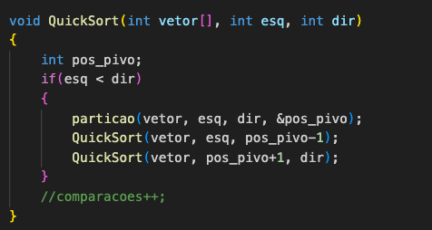
-HeapSort_vetor: Para todas as funções que compõem o HeapSort, adaptamos as funções feitas para vetor de struct paciente, para agora serem
utilizadas em vetores de inteiros.
Diferença dos parâmetros:
2.partição: usamos o retorno da função mediana como pivô.
Primeiro, coloco o pivô na posição inicial (esq) do atual sub-vetor. Em seguida, criamos
dois índices: i, que começa logo à direita do pivô (esq + 1) e j, que começa no final (dir).
O i avança da esquerda para a direita enquanto encontrar valores menores ou iguais
ao pivô, e o j recua da direita para a esquerda enquanto encontrar valores maiores que o
pivô.
Quando os dois param em posições, tal que i passa j, fazemos a troca desses elementos.
Assim, organizamos o vetor de forma que, no fim, tudo que é menor ou igual ao pivô fique à
esquerda e tudo que é maior fique à direita.
Para encerrar a função, após os índices i e j se cruzarem trocamos o v[j] com o pivô,
para assim j se torne a nova posição do pivô após a partição.
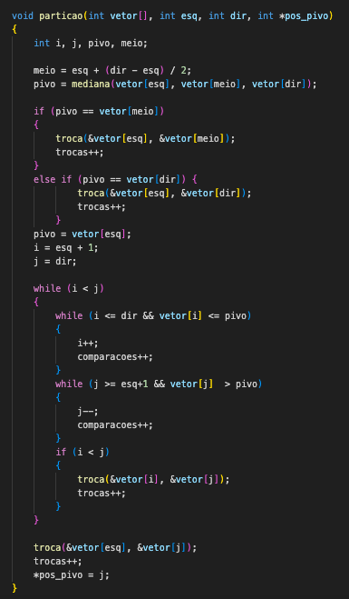
3.QuickSort: Função recursiva que chamamos os dois sub-vetores que formam as
metades (antes do pivô e depois do pivô) até que o vetor esteja ordenado.
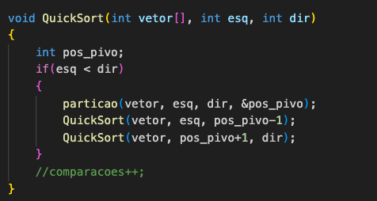
-HeapSort_vetor: Para todas as funções que compõem o HeapSort, adaptamos as funções feitas para vetor de struct paciente, para agora serem
utilizadas em vetores de inteiros.
Diferença dos parâmetros:
 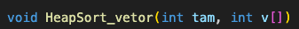
26/10 – Aprendizado complementar com GitHub Pages
Criamos um repositório separado apenas para testar e aprender a usar o GitHub Pages.
Essa etapa foi importante para nos familiarizarmos com HTML e entender como
desenvolveríamos o site principal do trabalho mais adiante.
28/10 – Desenvolvimento de Heap
Implementamos as funções relacionadas à estrutura de Heap.
Para finalizar a estrutura do heap implementamos as funções:
- InicHeap:
Aqui damos início ao vetor que vai determinar a nossa fila, então percorremos do
índice 1 até o índice “tam” o vetor, atribuindo uma string e uma prioridade (ambas vazias)
para cada elemento.
-RemoveHeap:
Primeiro verificamos se a nossa fila está vazia, porque se sim não há o que remover.
Como a ideia é que a enfermeira chefe remova o primeiro paciente na fila de
prioridade - para ser atendido- colocamos o primeiro paciente na última posição do vetor,
mas em seguida subtraímos 1 do tamanho da fila. Desse modo, o paciente foi colocado no
fim da fila e com a diminuição de tamanho foi descartado do vetor.
Ressaltando que, nosso projeto foi feito com o intuito de que
+prioridade, +doente.
Então a enfermeira, quando chamar o paciente e utilizar RemoveHeap, chamará o paciente mais doente (de maior prioridade.)
Também, caso a fila não tenha ficado vazia com a saída do paciente, chamamos
SacodeHeap para reajustar o novo primeiro elemento da fila.
-AlteraHeap:
Essa foi a função que mais tivemos dificuldades para implementar, o intuito dela é
alterar a prioridade de um paciente.
Como acharíamos o paciente que a enfermeira quer alterar?
Aqui tivemos que aprender sobre a manipulação de strings. Estudando a biblioteca string.h,
descobrimos a função strcmp que compara duas strings.
A função strcmp retorna 0 caso as strings sejam iguais e usamos isso ao nosso favor, então
pedimos para que a enfermeira digite o nome do paciente a ser alterado e percorremos o
vetor até encontrar, por meio do nome, esse paciente.
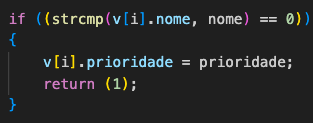
Uso da função strcmp.
Assim que o paciente é encontrado, atribuímos a nova prioridade a ele, visto que passamos
como parâmetros da função, além da fila, o nome fornecido e a nova prioridade.
29/10 – Testes e ajustes no Heap
Testamos todas as funções do Heap, corrigindo erros à medida que surgiam.
Além disso, elaboramos enunciados-base para os algoritmos de ordenação e criamos um primeiro
modelo de menu principal do programa.
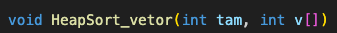
26/10 – Aprendizado complementar com GitHub Pages
Criamos um repositório separado apenas para testar e aprender a usar o GitHub Pages.
Essa etapa foi importante para nos familiarizarmos com HTML e entender como
desenvolveríamos o site principal do trabalho mais adiante.
28/10 – Desenvolvimento de Heap
Implementamos as funções relacionadas à estrutura de Heap.
Para finalizar a estrutura do heap implementamos as funções:
- InicHeap:
Aqui damos início ao vetor que vai determinar a nossa fila, então percorremos do
índice 1 até o índice “tam” o vetor, atribuindo uma string e uma prioridade (ambas vazias)
para cada elemento.
-RemoveHeap:
Primeiro verificamos se a nossa fila está vazia, porque se sim não há o que remover.
Como a ideia é que a enfermeira chefe remova o primeiro paciente na fila de
prioridade - para ser atendido- colocamos o primeiro paciente na última posição do vetor,
mas em seguida subtraímos 1 do tamanho da fila. Desse modo, o paciente foi colocado no
fim da fila e com a diminuição de tamanho foi descartado do vetor.
Ressaltando que, nosso projeto foi feito com o intuito de que
+prioridade, +doente.
Então a enfermeira, quando chamar o paciente e utilizar RemoveHeap, chamará o paciente mais doente (de maior prioridade.)
Também, caso a fila não tenha ficado vazia com a saída do paciente, chamamos
SacodeHeap para reajustar o novo primeiro elemento da fila.
-AlteraHeap:
Essa foi a função que mais tivemos dificuldades para implementar, o intuito dela é
alterar a prioridade de um paciente.
Como acharíamos o paciente que a enfermeira quer alterar?
Aqui tivemos que aprender sobre a manipulação de strings. Estudando a biblioteca string.h,
descobrimos a função strcmp que compara duas strings.
A função strcmp retorna 0 caso as strings sejam iguais e usamos isso ao nosso favor, então
pedimos para que a enfermeira digite o nome do paciente a ser alterado e percorremos o
vetor até encontrar, por meio do nome, esse paciente.
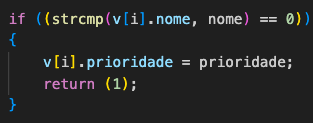
Uso da função strcmp.
Assim que o paciente é encontrado, atribuímos a nova prioridade a ele, visto que passamos
como parâmetros da função, além da fila, o nome fornecido e a nova prioridade.
29/10 – Testes e ajustes no Heap
Testamos todas as funções do Heap, corrigindo erros à medida que surgiam.
Além disso, elaboramos enunciados-base para os algoritmos de ordenação e criamos um primeiro
modelo de menu principal do programa.
 Começo do menu, onde o usuário escolhe o caminho.
30/10 – Comparação de algoritmos
Nesse dia criamos funções e arquivos com intuito de nos auxiliar durante o projeto.
Desenvolvemos a função compara, responsável por comparar o desempenho dos diferentes
algoritmos de ordenação. Criamos também um arquivo main de teste para validar essa
função e arrumamos os erros de compilação que surgiram.
No novo arquivo, implementamos diversos testes diferentes para analisarmos o
funcionamento de cada função.
A partir dessa análise, vimos alguns erros de compilação e determinamos como padrão que
nossos vetores se iniciaram em v[1] e nao v[0], assim como vimos em aula.
31/10 – Integração e testes do menu
Ajustamos o menu principal para permitir a execução e o teste de todas as funcionalidades
implementadas juntas.
Começo do menu, onde o usuário escolhe o caminho.
30/10 – Comparação de algoritmos
Nesse dia criamos funções e arquivos com intuito de nos auxiliar durante o projeto.
Desenvolvemos a função compara, responsável por comparar o desempenho dos diferentes
algoritmos de ordenação. Criamos também um arquivo main de teste para validar essa
função e arrumamos os erros de compilação que surgiram.
No novo arquivo, implementamos diversos testes diferentes para analisarmos o
funcionamento de cada função.
A partir dessa análise, vimos alguns erros de compilação e determinamos como padrão que
nossos vetores se iniciaram em v[1] e nao v[0], assim como vimos em aula.
31/10 – Integração e testes do menu
Ajustamos o menu principal para permitir a execução e o teste de todas as funcionalidades
implementadas juntas.
 Cabeçalho menu.c
Aqui também criamos a função InserirPaciente.
-InserirPaciente:
1- verifica se há capacidade na fila (determinamos que a fila do pronto socorro pode
ter no máximo 1000 pacientes).
2- Se há espaço na fila, ele insere o paciente na última posição e depois chama
InsereHeap - para manter o paciente em sua ordem correta conforme max-heap.
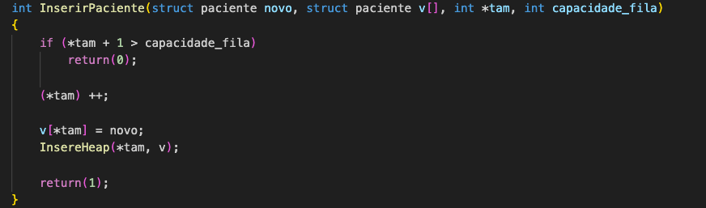
01/11 – Revisão geral e início do site
Revisamos o código e o funcionamento do menu, resolvendo pequenos problemas internos.
Percebemos que, por exemplo, a cada inserção de um novo paciente por mais que a fila
fosse atualizada, ela não era ordenada. Então, a enfermeira chefe poderia chamar o
próximo da fila e não necessariamente chamar o paciente de maior prioridade.
Nesse caso, quando a enfermeira escolher a opção de alterar prioridade ou inserir novo
paciente, após os dados serem fornecidos, nós ordenamos o vetor de struct
pacientes com o HeapSort:
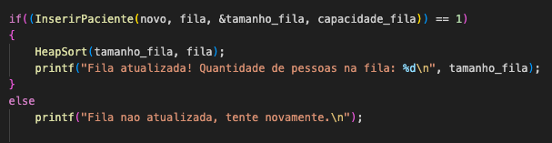
Cabeçalho menu.c
Aqui também criamos a função InserirPaciente.
-InserirPaciente:
1- verifica se há capacidade na fila (determinamos que a fila do pronto socorro pode
ter no máximo 1000 pacientes).
2- Se há espaço na fila, ele insere o paciente na última posição e depois chama
InsereHeap - para manter o paciente em sua ordem correta conforme max-heap.
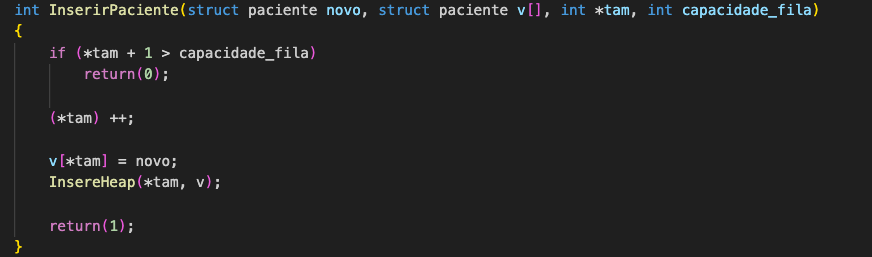
01/11 – Revisão geral e início do site
Revisamos o código e o funcionamento do menu, resolvendo pequenos problemas internos.
Percebemos que, por exemplo, a cada inserção de um novo paciente por mais que a fila
fosse atualizada, ela não era ordenada. Então, a enfermeira chefe poderia chamar o
próximo da fila e não necessariamente chamar o paciente de maior prioridade.
Nesse caso, quando a enfermeira escolher a opção de alterar prioridade ou inserir novo
paciente, após os dados serem fornecidos, nós ordenamos o vetor de struct
pacientes com o HeapSort:
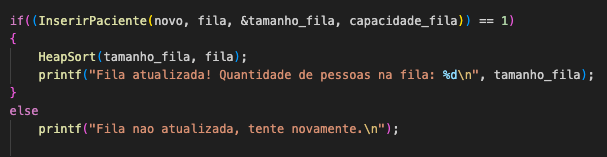
 Também começamos a montar o site do trabalho, adicionando a primeira parte do relatório.
03/11 – Correção da contagem de comparações
Identificamos um erro na forma como estávamos contabilizando o número de comparações.
Corrigimos essa lógica em todos os algoritmos de ordenação, removendo trechos
desnecessários e ajustando a contagem.
(A conta final está no print das funções no dia 24/10)
04/11 – Finalização do menu principal
Finalizamos completamente o menu principal, garantindo que todas as opções estivessem
funcionando corretamente.
Escolhendo caminho 1 e instruindo para inserir paciente:
Também começamos a montar o site do trabalho, adicionando a primeira parte do relatório.
03/11 – Correção da contagem de comparações
Identificamos um erro na forma como estávamos contabilizando o número de comparações.
Corrigimos essa lógica em todos os algoritmos de ordenação, removendo trechos
desnecessários e ajustando a contagem.
(A conta final está no print das funções no dia 24/10)
04/11 – Finalização do menu principal
Finalizamos completamente o menu principal, garantindo que todas as opções estivessem
funcionando corretamente.
Escolhendo caminho 1 e instruindo para inserir paciente:
 Nosso menu sempre pergunta se o usuário quer imprimir a fila, assim como exigido no enunciado.
Instruindo para remover paciente e imprimir a fila:
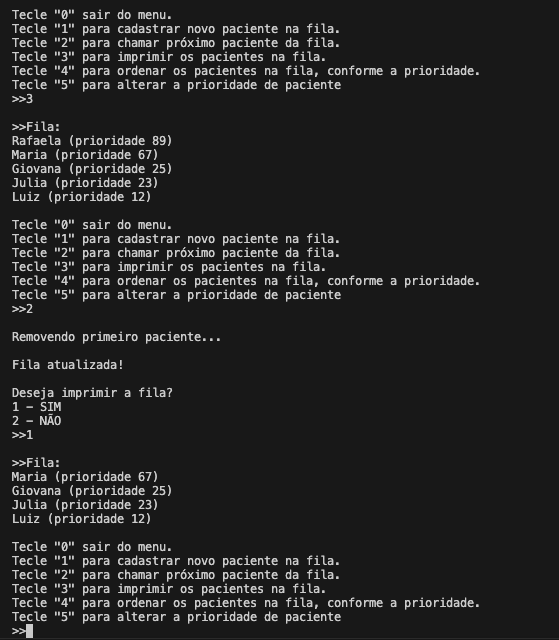
Instruindo para ordenar fila e alterar prioridade de paciente:
Nosso menu sempre pergunta se o usuário quer imprimir a fila, assim como exigido no enunciado.
Instruindo para remover paciente e imprimir a fila:
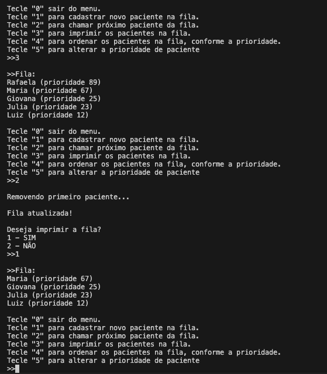
Instruindo para ordenar fila e alterar prioridade de paciente:
 A primeira parte do nosso menu é feita de um laço, quando a enfermeira tecla “0” para sair
do menu, a variável saída se torna verdadeira (saída = 1) e o laço do menu hospitalar é
finalizado.
Já quando o usuário decide entrar no segundo caminho, é gerado um vetor de 1024
elementos inteiros aleatórios e é apresentado as estatísticas com cada método de
ordenação. Quantas comparações e trocas foram feitas no selectsort, heapsort e quicksort.
Criamos o vetor aleatório, fazemos cópias para cada tipo de ordenação: para que assim não
comparemos estatísticas dos algoritmos de ordenação sendo que utilizamos diferentes
vetores.
A primeira parte do nosso menu é feita de um laço, quando a enfermeira tecla “0” para sair
do menu, a variável saída se torna verdadeira (saída = 1) e o laço do menu hospitalar é
finalizado.
Já quando o usuário decide entrar no segundo caminho, é gerado um vetor de 1024
elementos inteiros aleatórios e é apresentado as estatísticas com cada método de
ordenação. Quantas comparações e trocas foram feitas no selectsort, heapsort e quicksort.
Criamos o vetor aleatório, fazemos cópias para cada tipo de ordenação: para que assim não
comparemos estatísticas dos algoritmos de ordenação sendo que utilizamos diferentes
vetores.
 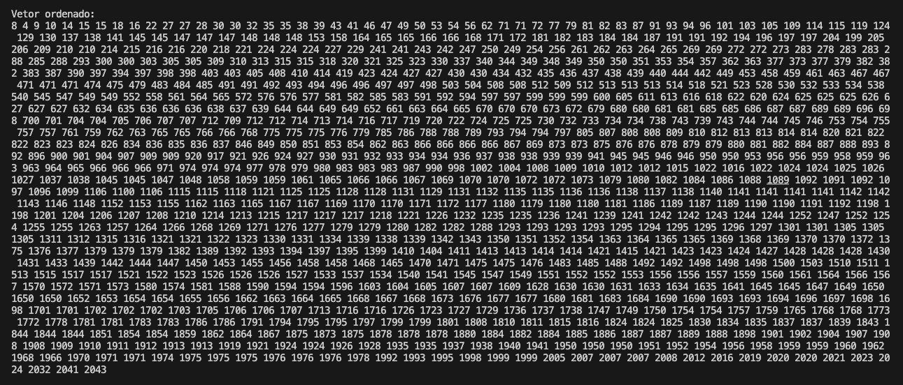
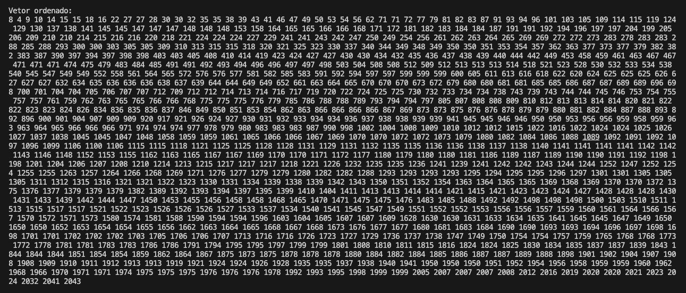
 05/11 – Revisão final e testes
Confirmamos com o professor que é possível usar min-heap.
2. Também criamos um arquivo makefile para facilitar na compilação
05/11 – Revisão final e testes
Confirmamos com o professor que é possível usar min-heap.
2. Também criamos um arquivo makefile para facilitar na compilação
 Em seguida, executamos e registramos diversos testes para validar o
funcionamento correto de todas as partes do projeto e adicionamos isso ao site.
Após executarmos diversos testes, e analisarmos os vetores decidimos que o QuickSort foi melhor na prática.
Em geral, a soma de trocas feito pelo QuickSort é quase 1/4 das trocas feitas pelo HeapSort e em
comparações o QuickSort tem quase metade das comparações efetuadas pelo HeapSort.
O SelectSort foi considerado o pior em todos os casos.
07/11 - Entrega do Trabalho
Em seguida, executamos e registramos diversos testes para validar o
funcionamento correto de todas as partes do projeto e adicionamos isso ao site.
Após executarmos diversos testes, e analisarmos os vetores decidimos que o QuickSort foi melhor na prática.
Em geral, a soma de trocas feito pelo QuickSort é quase 1/4 das trocas feitas pelo HeapSort e em
comparações o QuickSort tem quase metade das comparações efetuadas pelo HeapSort.
O SelectSort foi considerado o pior em todos os casos.
07/11 - Entrega do Trabalho